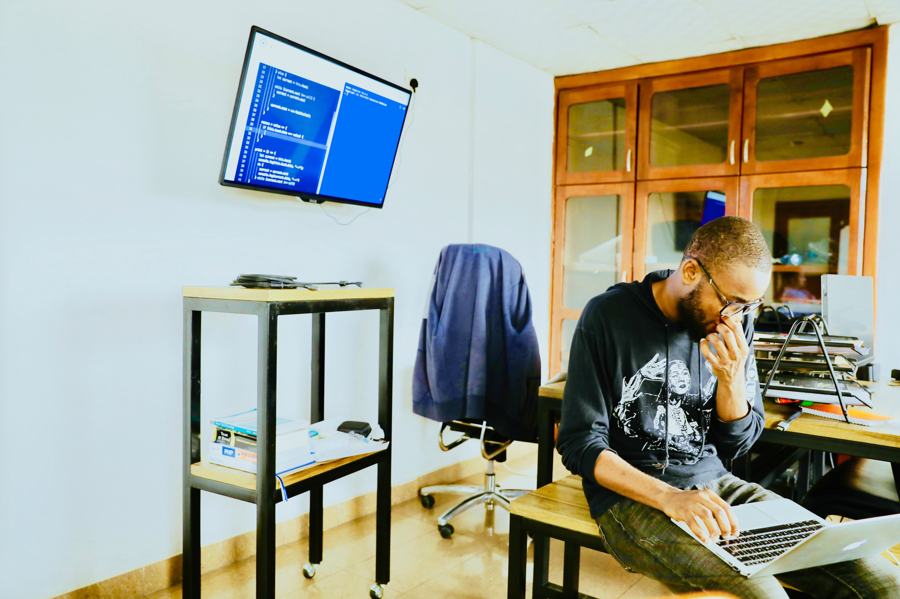

Coding in trendy West Hollywood
Posted: 2/7/2020
Whether it's the Sunset Strip, which served as a home, office and bar to some of the most famous musicians of all time, or the vibrant LGBTQ community that's as ingrained in the community as Rock and Roll, West Hollywood seems to add another dimension to its identity every couple of years. Over the past decade, tech startups have moved in, eschewing the more established seaside communities of "Silicon Beach" for WeHo's history, culture and proximity to the entertainment industry. Built In LA spoke with Jeff Pion, Michelle Esquivel and Shay Bolton of commercial real estate services company CBRE to understand a little bit about what West Hollywood means to Los Angeles, and what an influx of up-starts might mean for the future of the area.
West Hollywood is home to a number of cultural landmarks. The House of Blues (though it closed in 2015), Whisky a Go Go, The Troubadour, The Roxy Theatre and Viper Room all are located on Sunset, while architectural beauties such as the Pacific Design Center, La Fontaine Building and 9200 Sunset add to the diversity. The LGBTQ community in West Hollywood is known as one of the most vibrant communities of its kind in the world. In 1967, prior to the Stonewall riots in New York City, a group called PRIDE (Personal Rights in Defense and Education) met every week at a bar in West Hollywood called the Hub. PRIDE helped organize protests after a violent police raid on the Black Cat Tavern in Silver Lake, two years before the Stonewall riots.
Today, the area — occasionally dubbed "Gay Camelot" — is home to one of the biggest Pride festivals in the world, a yearly AIDS Walk and number of local LGBTQ-focused nonprofits. Dating app Grindr, which has become one of the most unifying voices in the global gay community, has also set up shop in the neighborhood with its global headquarters. Magnopus, Grindr, Deluxe Entertainment, Ritual, NuORder, Hutch, Laurel & Wolf, Orbitera, FabFitFun, Ticketmaster, Tinder, Evite, Curious Minds, engage:BDR, Spin Media, Vertical Mass, Wondery.

Situated at the southern base of the Hollywood Hills, West Hollywood is neighbored by the San Fernando Valley to the north, Hollywood to its east and West Los Angeles (Century City, Westwood, Brentwood and Culver City) to its south and west. The main freeways in the area are the 405, which runs west of West Hollywood, and the 101, which runs to its east.